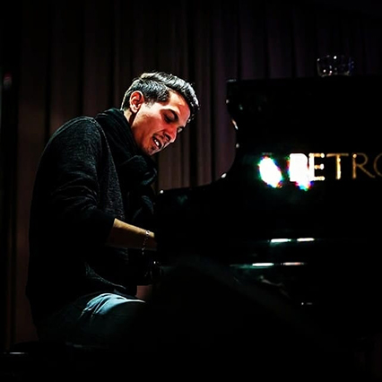
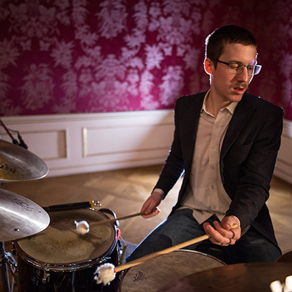
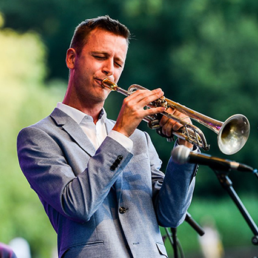

A zenekar
A Sebestyén Patrik Sextet egy 2019-ben alakult fiatal formáció, mely főként saját kompozíciókat játszik. Az egyedi stílusú darabok mellett mainstream és a klasszikus zenével vegyített jazz is szerepel a repertoáron. A zenekar különlegessége még, hogy a művészek improvizációs előadásmódja eltérő, ez is erősíti az együttes sokoldalúságát. A tagok aktív részesei a magyar jazz-zenei életnek, valamint számos versenyeredménnyel büszkélkedhetnek.

Farkas Zsolt - zongora

Oláh Kálmán Jr. - szaxofon

Richter Ambrus - ütő
Stummer Márton - gitár

Sebestyén Patrik - trombita

Miskolczi Márk - bőgő
Elérhetőségeink
- Telefon: +36305052008
- Email: sebestyenpatriksextet@gmail.com
- Facebook: Sebestyén Patrik Sextet